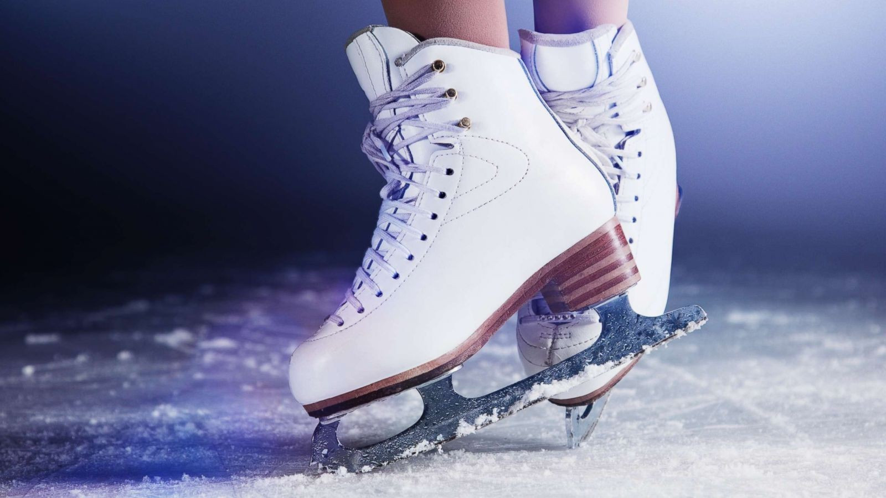

Фигурное катание
А еще я занималась фигурным катанием,мне очень нравилось,но потом поменялся тренер и я ушла.Мне нравилось что,фигурное катание требует упорства, самоотверженности и желания для достижения успеха. Этот вид спорта требует постоянных тренировок, строго следования тренера и тренировочному плану, а также самоконтроля и дисциплины.
Плавание

Так же я занималась много лет плаванием,но туда я ходила потому что плавание является одним из самых полноценных видов физической активности. Во время плавания задействованы практически все мышцы тела – от ног и рук до спины, ягодиц и корпуса. Таким образом, плавание помогает укрепить и развить мышцы, повысить гибкость и выносливость.